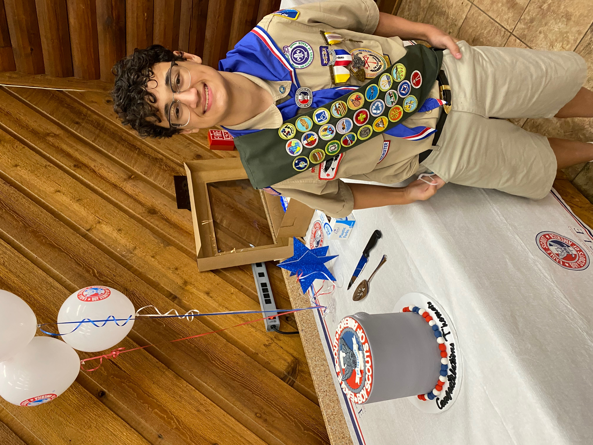
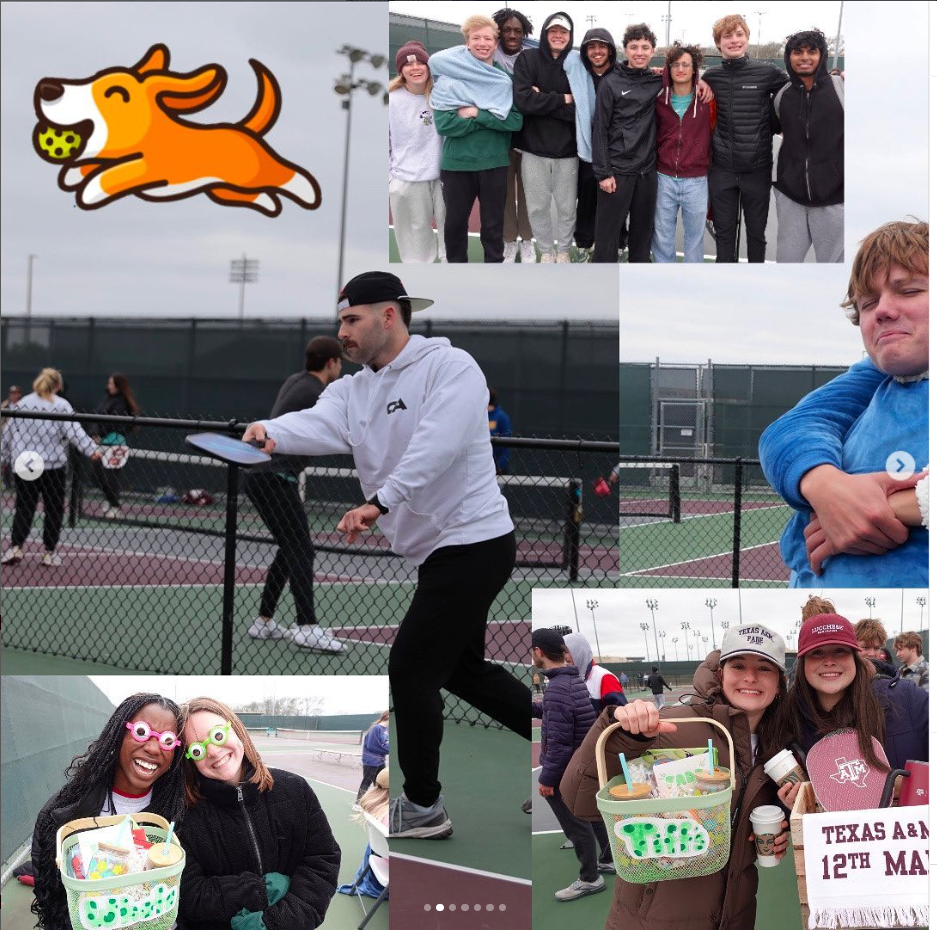

Service
Boy Scouts
Throughout high school I volunteered often in my community. I worked many hours at Loaves and Fishes soup kitchen in Houston, serving in different roles. At times I cooked meals in the kitchen, other times I stood at the door to welcome guests. Often we sat down to eat and talk with the people we served, which was the most impactful. I also worked on my Eagle project, where I planned and built a gaga ball pit at my local park. I organized materials, led a team of volunteers, and building it so children in the park would have a safe and fun place to play.
South Korea

The summer before freshman year I traveled to South Korea for the World Scout Jamboree in Saemangeum. I served as an International Service Team member for several weeks. At the start of camp I was a shift lead at the archery range, guiding hundreds of scouts each day as they practiced and competed. When a typhoon struck, we first tried to moved scouts from flood zones to higher more elevated ground. Once the order to leave was given, I helped break down tents and equipment. I worked with other volunteers to get the American and UK youth participants safely onto their buses for their evacuation.
FADE
Freshman year I joined Freshman Aggies Developing in Excellence. As a member I worked with others to host service projects on campus. Our biggest event was a pickleball charity tournament called Pickleball Palooza. We organized teams, gathered supplies, and ran the event with strong turnout. The tournament raised money for the Bryan Animal Shelter, helping support animals in need of care and homes. Fade also ran smaller service activities throughout the year, such as volunteering at local events like big event and helping other campus organizations with their philantrophy projects.